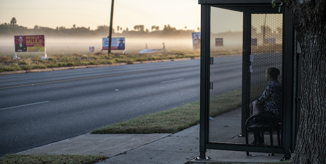

Do Democrats Care About the Mexican-American Vote?
The Republican Party’s midterm election expectations for South Texas were dashed. But Democrats should still see the results from the region as a wake-up call.

As the dust clears from the 2022 midterm elections, it’s clear that the “red wave” pundits and analysts had widely predicted did not come to be. There are few places where the Republican Party’s dashed expectations were more visible than South Texas—a region much discussed in national media after the 2020 election, when voters swung sharply toward the GOP. Republican hopes to claim the region’s traditionally Democratic congressional seats and Mexican-American votes were high, given that Republican Mayra Flores had already flipped the Thirty-Fourth District in a special election earlier this year (albeit with the help of low turnout). Ultimately, Republican newcomer Monica De La Cruz did flip the Fifteenth District, but Democrats took back the Thirty-Fourth District with the victory of Vincente Gonzalez and held on to Henry Cuellar’s seat in the Twenty-Eighth. And while Republican Governor Greg Abbott won reelection, Democrats celebrated their gubernatorial margins in places like Starr County (approximately 97 percent Mexican American), where Democratic candidate Beto O’Rourke earned 58 percent of the vote, an increase of thirteen points compared to the 2020 presidential vote.
But as Democrats in Texas and elsewhere take a collective sigh of relief, they risk missing the lasting implications of the Republican campaign for the Mexican-American vote this year. The GOP made genuine inroads over popular concerns in South Texas, such as crime rates and dilapidated infrastructure. Republicans’ strong anti-abortion stance also found a receptive audience among Hispanic Evangelicals and socially conservative Catholics. Moreover, Republican leadership made unprecedented investments in diverse candidates, as evidenced in the battle of six Mexican-American candidates for South Texas’s three congressional races. These efforts cut down the Democratic Party’s advantage in the state’s sixty-four majority-Hispanic counties from a ten-point lead in the 2020 presidential vote down to a seven-point margin in the 2022 gubernatorial vote. This arguably minor three-point loss among Mexican-American voters in Texas should still cause alarm for Democrats.
It is instructive to look back at Texas politics a half century ago, a moment with echoes of the problem facing Democratic officials today, when Republicans first began to pursue the strategy that they have doubled down on in recent years: not only earning support from Mexican Americans, but also denying those votes to the Democratic Party.
In the early 1970s, resentment of the Democratic political establishment was at an all-time high among leaders and voters of Mexican descent in Texas. The consensus was that the Democratic Party had not reciprocated the Mexican-American electorate’s near-unanimous support during the presidential elections of the 1960s. Many cited unfulfilled promises of economic uplift and political representation. This frustration laid the groundwork for a new third-party challenger called La Raza Unida Party.
Founded in Texas in 1970, LRUP had branches in Colorado, California, and elsewhere in the Southwest. By 1972, LRUP had an entire slate of candidates in Texas, including a young attorney named Ramsey Muñiz who ran for governor. As LRUP historian Ignacio García argues, the radical protest politics of the nascent Chicano Movement fueled the organization’s fundamental rejection of the two-party system—a position with growing support across Texas. Yet for Republican President Richard Nixon, the unrest that precipitated the LRUP’s rise presented an opportunity for the GOP to take Texas in the 1972 presidential race.
Nixon’s presidential campaign sought to use LRUP to splinter Chicano Democrats in Texas. The Republican Party’s Committee to Re-elect the President (CRP) engaged in what was certainly an impressive campaign for Mexican-American voters in Texas and across the country by touting the administration’s high-level Hispanic appointees and federal economic investment programs, as historian Geraldo Cadava demonstrates. However, Republicans paired those efforts with a strategy to depress the Democratic vote. The Wall Street Journal first exposed this covert strategy in April 1972, reporting that Republican operatives attempted to contribute $25,000 to the Texas LRUP “in the hope that it will siphon off votes from the Democrats in that key state.” In 1974, the Senate Watergate Committee’s final report corroborated this facet of the Nixon campaign’s attempt to spoil the Democrats’ Mexican-American base.
That report included damning citations of confidential memoranda by Alex Armendariz, the CRP’s Spanish-speaking coordinator. “The fact that there are about 1 million political Mexican American voters in Texas and that Humphrey won that state in 1968 by only 38,000 votes,” Armendariz wrote, “substantiate the possible importance of La Raza Unida’s neutrality in this election.” Committee investigators also found evidence of quid pro quo agreements with many other Mexican-American leaders that promised federal funds and positions if they did not endorse Democratic nominee George McGovern. Ultimately, it was the CRP’s combined use of positive and negative campaign strategies that reduced Democrats’ 90 percent share of the Lone Star State’s Mexican-American voters in 1968 down to 45 percent in 1972, with 6 percent of that support diverted to LRUP.
Devoid of a third-party diversion in 2022, Republican strategists opted for disinformation to complement their tactics for the Mexican-American vote. That strategy is best revealed by the work of America First Legal (AFL), an organization founded by former Trump advisor Stephen Miller, and a related political action committee called Citizens for Sanity. Both groups pumped millions of dollars into mailing negative, misleading campaign ads about the Democratic Party’s policies on affirmative action (“Joe Biden put white people last in line for Covid relief funds”) and transgender care (“Joe Biden, progressive politicians and their leftist government allies are promoting radical and irreversible gender experiments on children”). While the bulk of the messaging was broadcast to the traditional far-right Trumpian audience, the organizations also spent considerable sums on targeted ads in Black and Latino media in battleground states like Texas.
The League of United Latin American Citizens (LULAC), a national Latino civil rights organization founded in Texas, denounced AFL’s “scare and confusion tactics aimed at keeping Latinos from the polls.” Both AFL and Citizens for Sanity propagated similar messages over radio and digital media in twenty-four markets nationwide, as reported by the New York Times and NPR. Disinformation about COVID-19 and election fraud specifically targeted at Latinos started in 2020, suggesting that this effort to dissuade and polarize Latino voters is part of a destructive long-term plan.
While analyses of the 2022 election have focused on Republicans’ underperformance with Mexican-American voters despite their efforts to court Latinos, the question remains whether Democrats will heed this midterm’s important lessons for 2024. The slightest shifts in Latino voting trends are enough for Republicans to chip away at the Democratic coalition in swing states; can Democratic leaders reverse the outcome of 1972 and prove that they do not take Latino voters for granted? The Democratic Party in Texas, and across the country, will have to answer this question with little help from federal legislative concessions due to the GOP’s takeover of the House of Representatives.
As such, Democrats must focus on other signs of good faith to this constituency. For instance, the Biden Administration could drastically expand its Latino Economic Summits, a series of six forums that connected local communities with federal administrators and resources earlier this year. Greater investments by the national party in local party organization, leadership training, and community outreach could also go a long way in cementing strong partisan ties at the grassroots level. Ultimately, South Texas represents a warning for the Democratic Party to take stock of its relationship with Mexican Americans—and an opportunity to cultivate a party that is present, accountable, and responsive. Razor sharp margins make this realization non-negotiable.